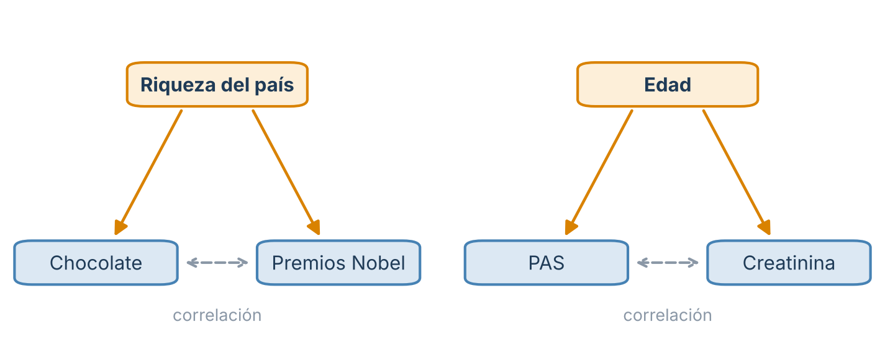
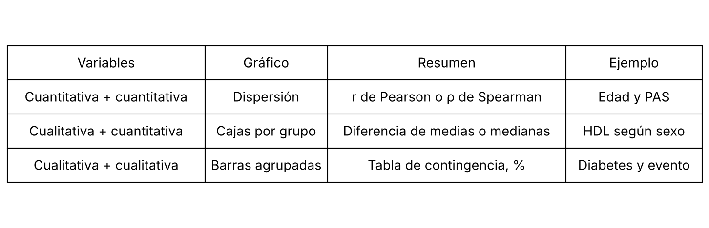
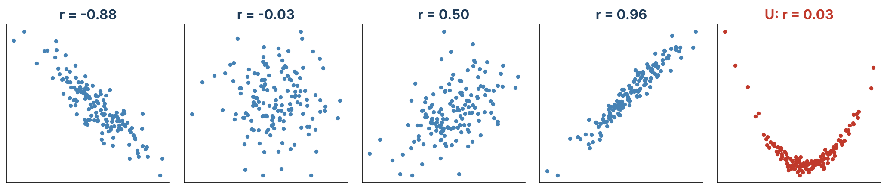
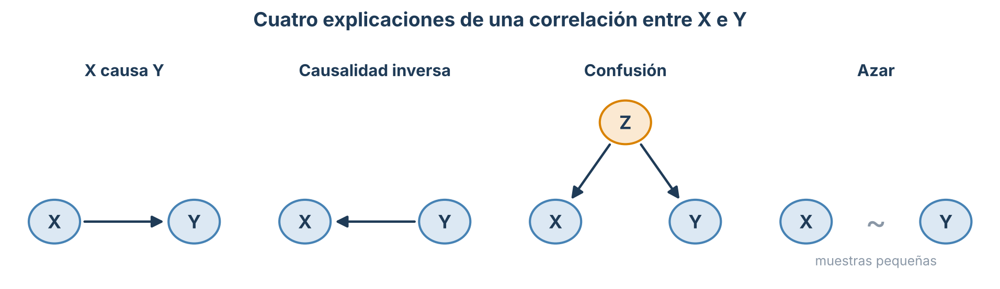

Bioestadística (1964) · Grado en Medicina · Curso 2027-2028
Tema 130Análisis bivariante y representación gráfica de datos clínicos: asociación y correlación
Módulo 3. Procesado inicial de datos
Fernando Borrás Rocher · Universidad Miguel Hernández de Elche · CC BY 4.0
Objetivos de aprendizaje
Al terminar esta sesión serás capaz de:
- Elegir el gráfico y el resumen adecuados según el tipo de las dos variables que se relacionan.
- Calcular e interpretar los coeficientes de correlación de Pearson y de Spearman.
- Reconocer las limitaciones de la correlación: relaciones no lineales, valores atípicos y variables de confusión.
- Comparar una variable cuantitativa entre grupos con diagramas de caja y de violín.
- Representar la relación entre dos variables categóricas con barras de porcentajes.
- Construir un mapa de calor de correlaciones con Seaborn.
Cómo usar esta presentación
Usa el selector de arriba para dar el tema en una sesión completa o en dos sesiones intercaladas.
🎓 Sesión de clase magistral
- 1. Caso clínico de partida 5 min
- 2. Conceptos clave 10 min
- 5. Autoevaluación 5 min
Explica los conceptos, haz la pausa activa y cierra con las ideas clave.
💻 Sesión de Colab
- 3. Demostración: relacionar variables clínicas 20 min
- 4. Práctica en la app Bioestadística 10 min
- 5. Autoevaluación 5 min
Cada estudiante abre su copia del cuaderno, predice el resultado y después ejecuta la celda.
Teclas: ← → para pasar · N notas del profesor · M cambiar de modo · F pantalla completa · Esc índice.
1. Caso clínico de partida
Chocolate y premios Nobel; presión arterial y creatinina

- Una correlación real puede deberse a una tercera variable que influye en las dos.
- En el registro, la edad eleva a la vez la PAS y la creatinina.
Pregunta para la clase: ¿Qué otra variable podría explicar que dos medidas clínicas suban juntas?
2. Conceptos clave
2.1 Qué gráfico y qué resumen
Qué gráfico y qué resumen según las variables

- El tipo de las dos variables decide el gráfico y la medida de asociación.
2. Conceptos clave
2.2 Los coeficientes de correlación
Cómo se ve cada coeficiente de correlación

- r mide solo la relación lineal, de −1 a 1.
- Una U perfecta puede dar r ≈ 0: mira siempre el gráfico.
2. Conceptos clave
2.3 Asociación no es causalidad

Una correlación entre X e Y puede deberse a:
- Que X cause Y.
- Que Y cause X (causalidad inversa).
- Que una tercera variable Z cause ambas: confusión.
- El azar, sobre todo en muestras pequeñas.
Los criterios de Bradford Hill (1965) y, sobre todo, el diseño del estudio (Tema 230) ayudan a decidir si una asociación puede ser causal.
Pausa activa
Piensa 30 segundos, comenta con quien tienes al lado y vota.
Entre el IMC y la mortalidad se observa una curva en U. ¿Qué valor de r de Pearson es esperable?
En la sesión de Colab
Lo que acabas de ver se comprueba con datos en el cuaderno del Tema 130.
- Abre el cuaderno y guarda tu copia: Archivo → Guardar una copia en Drive.
- Ejecuta la celda de configuración.
- Ve a la demostración y predice cada resultado antes de ejecutar.
3. Demostración: relacionar variables clínicas
3.1 Datos
▶ En tu cuaderno: 3.1 Datos. Antes de ejecutar, escribe qué esperas obtener.
import pandas as pd
import numpy as np
import matplotlib.pyplot as plt
import seaborn as sns
DATOS = "https://raw.githubusercontent.com/fborrasumh/bioestadistica/main/datos/"
datos = pd.read_csv(DATOS + "cohorte_limpia.csv").merge(pd.read_csv(DATOS + "analiticas.csv"), on="id", how="left")
print(datos.shape)3. Demostración: relacionar variables clínicas
3.2 Dos variables cuantitativas: edad y presión sistólica
▶ En tu cuaderno: 3.2 Dos variables cuantitativas: edad y presión sistólica. Antes de ejecutar, escribe qué esperas obtener.
plt.figure(figsize=(6, 4.5))
sns.regplot(data=datos, x="edad", y="pas_mmHg", scatter_kws={"alpha": 0.4}, line_kws={"color": "firebrick"})
plt.xlabel("Edad (años)")
plt.ylabel("Presión arterial sistólica (mmHg)")
plt.title("Edad y presión arterial sistólica")
plt.show()
r = datos["edad"].corr(datos["pas_mmHg"])
rho = datos["edad"].corr(datos["pas_mmHg"], method="spearman")
print(f"Pearson r = {r:.2f} · r² = {r**2:.2f} · Spearman ρ = {rho:.2f}")Correlación positiva y moderada: la PAS tiende a aumentar con la edad. Con r² ≈ 0,23, la edad se asocia con casi una cuarta parte de la variabilidad de la PAS. El resto depende de otros factores.
3. Demostración: relacionar variables clínicas
3.3 Las tres trampas de la correlación
▶ En tu cuaderno: 3.3 Las tres trampas de la correlación. Antes de ejecutar, escribe qué esperas obtener.
Simulamos tres situaciones para ver por qué siempre hay que mirar el gráfico antes de interpretar r.
rng = np.random.default_rng(130)
x = rng.uniform(0, 10, 60)
x_atipico = np.append(rng.uniform(0, 5, 59), 25)
casos = {
"Relación lineal": (x, 2 * x + rng.normal(0, 3, 60)),
"Relación curva (en U)": (x, (x - 5) ** 2 + rng.normal(0, 2, 60)),
"Sin relación + un valor atípico": (x_atipico, np.append(rng.normal(10, 2, 59), 40)),
}
fig, ejes = plt.subplots(1, 3, figsize=(13, 3.8))
for eje, (titulo, (xs, ys)) in zip(ejes, casos.items()):
r = np.corrcoef(xs, ys)[0, 1]
rho = pd.Series(xs).corr(pd.Series(ys), method="spearman")
eje.scatter(xs, ys, alpha=0.6)
eje.set_title(f"{titulo}\nPearson {r:.2f} · Spearman {rho:.2f}")
plt.tight_layout()
plt.show()- Relación curva: hay una relación muy clara, pero r ≈ 0 porque no es lineal. Ocurre, por ejemplo, entre el IMC y la mortalidad, que aumenta en los dos extremos.
- Un solo valor atípico fabrica una correlación de Pearson alta en datos sin relación. Spearman apenas se altera.
3. Demostración: relacionar variables clínicas
3.4 La confusión: presión arterial y creatinina
▶ En tu cuaderno: 3.4 La confusión: presión arterial y creatinina. Antes de ejecutar, escribe qué esperas obtener.
print(f"PAS y creatinina: r = {datos['pas_mmHg'].corr(datos['creatinina_mg_dl']):.2f}")
print(f"Edad y PAS: r = {datos['edad'].corr(datos['pas_mmHg']):.2f}")
print(f"Edad y creatinina: r = {datos['edad'].corr(datos['creatinina_mg_dl']):.2f}")Si la asociación entre PAS y creatinina fuera fruto de la edad, debería debilitarse al comparar pacientes de edad parecida. Lo comprobamos dentro de grupos de edad:
datos["grupo_edad"] = pd.cut(datos["edad"], bins=[40, 55, 70, 86], right=False, labels=["40-54", "55-69", "70-85"])
for grupo, sub in datos.groupby("grupo_edad", observed=True):
r = sub["pas_mmHg"].corr(sub["creatinina_mg_dl"])
print(f"{grupo} años: r = {r:.2f} (n = {sub['creatinina_mg_dl'].notna().sum()})")Interpreta el resultado. Si las correlaciones dentro de cada grupo de edad son más débiles que la global, parte de la asociación se explicaba por la edad. Si en algún grupo persiste, puede haber confusión residual (dentro de un grupo de 15 años la edad todavía varía) o una relación real. Analizar estratificando por la posible variable de confusión es la idea que, en el Tema 270, desarrollaremos con la regresión múltiple.
3. Demostración: relacionar variables clínicas
3.5 Cualitativa y cuantitativa: el HDL según el sexo
▶ En tu cuaderno: 3.5 Cualitativa y cuantitativa: el HDL según el sexo. Antes de ejecutar, escribe qué esperas obtener.
fig, ejes = plt.subplots(1, 2, figsize=(10, 4), sharey=True)
sns.boxplot(data=datos, x="sexo", y="hdl_mg_dl", ax=ejes[0])
sns.violinplot(data=datos, x="sexo", y="hdl_mg_dl", ax=ejes[1], inner="quartile")
ejes[0].set_title("Diagrama de caja")
ejes[1].set_title("Diagrama de violín")
for eje in ejes:
eje.set_xlabel("")
ejes[0].set_ylabel("Colesterol HDL (mg/dL)")
plt.tight_layout()
plt.show()
datos.groupby("sexo")["hdl_mg_dl"].agg(["count", "mean", "std", "median"]).round(1)El diagrama de violín añade a la caja la forma completa de la distribución. Las mujeres tienen, en promedio, un HDL más alto, como se describe en la literatura. En el Tema 250 aprenderemos a decidir si una diferencia entre grupos puede deberse al azar.
3. Demostración: relacionar variables clínicas
3.6 Dos variables cualitativas: diabetes y evento cardiovascular
▶ En tu cuaderno: 3.6 Dos variables cualitativas: diabetes y evento cardiovascular. Antes de ejecutar, escribe qué esperas obtener.
porcentajes = pd.crosstab(datos["diabetes"], datos["evento_cv_5a"], normalize="index") * 100
porcentajes.columns = ["Sin evento", "Con evento"]
porcentajes.plot(kind="bar", stacked=True, figsize=(6, 4), color=["lightsteelblue", "firebrick"])
plt.ylabel("Porcentaje de pacientes (%)")
plt.xlabel("Diabetes")
plt.xticks(rotation=0)
plt.title("Evento cardiovascular a 5 años según diabetes")
plt.legend(loc="upper right")
plt.show()
porcentajes.round(1)3. Demostración: relacionar variables clínicas
3.7 Mapa de calor de correlaciones
▶ En tu cuaderno: 3.7 Mapa de calor de correlaciones. Antes de ejecutar, escribe qué esperas obtener.
variables = ["edad", "imc", "pas_mmHg", "pad_mmHg", "colesterol_mg_dl", "hdl_mg_dl",
"glucemia_mg_dl", "hba1c_pct", "creatinina_mg_dl"]
matriz = datos[variables].corr(method="spearman")
plt.figure(figsize=(8, 6.5))
sns.heatmap(matriz, annot=True, fmt=".2f", cmap="RdBu_r", vmin=-1, vmax=1, square=True)
plt.title("Correlaciones de Spearman entre variables clínicas")
plt.show()Las correlaciones más fuertes tienen explicación clínica. La glucemia y la HbA1c miden el mismo fenómeno. La PAS y la PAD forman parte de la misma medición. Un mapa de calor sirve para explorar, no para concluir: con 36 parejas de variables, alguna correlación aparecerá por puro azar.
Ampliación
Ampliación: matriz de gráficos de dispersión
sns.pairplot(datos[["edad", "pas_mmHg", "imc", "hba1c_pct", "diabetes"]].dropna(),
hue="diabetes", plot_kws={"alpha": 0.5}, height=2.2)
plt.show()Ampliación
Ampliación: errores frecuentes
Concluir causalidad a partir de una correlación, sin considerar la confusión ni la causalidad inversa.
Interpretar r = 0 como ausencia de relación: solo indica ausencia de relación lineal.
Calcular la correlación de Pearson sin mirar el gráfico, cuando un valor atípico o una curva la distorsionan.
Usar Pearson con variables ordinales como una escala de dolor: es más adecuado Spearman.
Buscar correlaciones entre decenas de variables y presentar solo las «interesantes»: es una forma de pescar resultados casuales.
Representar dos categóricas con números absolutos cuando los grupos tienen tamaños muy distintos: se comparan porcentajes.
Ampliación
Ampliación: Kendall y asociación entre variables cualitativas
La tau de Kendall es otra correlación por rangos. Cuenta los pares de pacientes concordantes (los dos valores suben a la vez) y discordantes. Funciona bien con muestras pequeñas y con muchos empates.
Para dos variables cualitativas no hay correlación; hay asociación. Se mide a partir de la ji cuadrado (Tema 230):
| Medida | Tabla | Valores |
|---|---|---|
| Coeficiente φ (phi) | 2 × 2 | de 0 a 1 |
| V de Cramér | cualquier tamaño | de 0 a 1 (0 = sin asociación) |
En tus materiales SIMUSTAT: Tema 210. Relación entre variables, apartado 1 (Kendall) y 2 (φ, V de Cramér).
from scipy import stats
print("Edad y PAS:")
for metodo in ["pearson", "spearman", "kendall"]:
print(f" {metodo:9} r = {datos['edad'].corr(datos['pas_mmHg'], method=metodo):.2f}")
def v_cramer(x, y):
tabla = pd.crosstab(x, y)
chi2 = stats.chi2_contingency(tabla, correction=False)[0]
return np.sqrt(chi2 / (tabla.values.sum() * (min(tabla.shape) - 1)))
print("\nφ tabaco × evento cardiovascular:", round(v_cramer(datos["fumador"], datos["evento_cv_5a"]), 3))
print("V de Cramér centro × diabetes: ", round(v_cramer(datos["centro"], datos["diabetes"]), 3))Kendall da valores más bajos que Spearman con los mismos datos; es normal, porque mide otra cosa (pares). Compara siempre coeficientes del mismo tipo. En una tabla 2 × 2, φ y la V de Cramér coinciden.
4. Práctica en la app Bioestadística
Abre la unidad 130 de la app Bioestadística y completa sus misiones:
- Misión básica (sin asistente): emparejar gráficos de dispersión con su coeficiente de correlación.
- Misión clínica (con pistas): estudiar la relación entre el IMC y la presión arterial, por separado en hombres y mujeres.
- Misión reto (con asistente): pedir al asistente un análisis exploratorio de la cohorte, identificar qué conclusiones causales injustificadas propone y reescribirlas correctamente.
Al terminar, exporta el informe de la unidad.
5. Autoevaluación
Responde sin asistente y sin ejecutar código.
5. Autoevaluación
Elige una opción: verás la explicación.
Entre el IMC y la mortalidad se observa una curva en U. ¿Qué valor de r de Pearson es esperable?
¿Qué gráfico es el más adecuado para comparar la glucemia entre diabéticos y no diabéticos?
En una cohorte, r = 0,45 entre el consumo de café y el infarto. Los bebedores de café fuman más. ¿Qué es lo más prudente concluir?
¿En qué situación es preferible el coeficiente de Spearman al de Pearson?
Si r = 0,6 entre la edad y la PAS, ¿qué proporción de la variabilidad de la PAS se asocia linealmente con la edad?
Ideas clave
- El tipo de las dos variables decide el gráfico y el resumen.
- Pearson mide la relación lineal; Spearman, la monótona, y es robusto frente a atípicos.
- Mira siempre el gráfico antes de interpretar un coeficiente.
- Asociación no es causalidad: piensa en la confusión, la causalidad inversa y el azar.
- Estratificar por una posible variable de confusión es el primer paso para controlarla.
Glosario
| Término | Definición |
|---|---|
| Análisis bivariante | Estudio de la relación entre dos variables |
| Correlación de Pearson | Medida de la relación lineal entre dos variables cuantitativas |
| Correlación de Spearman | Correlación calculada sobre los rangos; mide relaciones monótonas |
| Relación monótona | Relación en la que una variable siempre crece, o siempre decrece, cuando la otra aumenta |
| Coeficiente de determinación (r²) | Proporción de la variabilidad asociada linealmente con la otra variable |
| Variable de confusión | Variable relacionada con las dos variables estudiadas, que distorsiona su asociación |
| Estratificar | Analizar por separado dentro de categorías de una tercera variable |
| Diagrama de violín | Gráfico que combina el diagrama de caja con la forma de la distribución |
| Mapa de calor | Representación de una matriz con colores según el valor |
Para saber más
- Messerli FH. Chocolate consumption, cognitive function, and Nobel laureates. N Engl J Med. 2012;367(16):1562-1564. doi:10.1056/NEJMon1211064
- Hill AB. The environment and disease: association or causation? Proc R Soc Med. 1965;58(5):295-300. doi:10.1177/003591576505800503
- Galería de ejemplos de Seaborn
- SIMUSTAT Unidigital UMH. Tema 210. Relación entre variables. Cuaderno de Google Colab. Elche: Universidad Miguel Hernández; 2023.